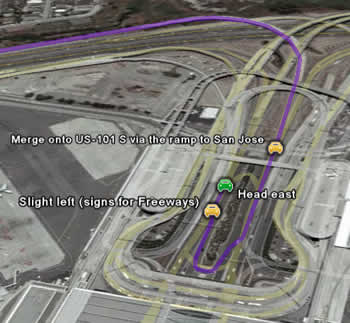
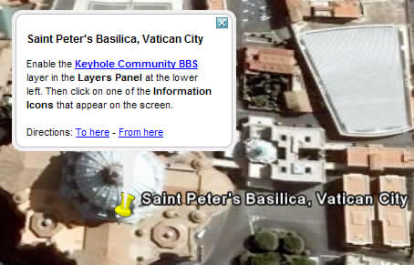

Note - Not all language versions of Google Earth support all the features described on this page. Learn more here.
You can use the Google Earth Search panel to find places on the globe in the following ways:
This section covers basic search techniques using Google Earth. For more information on searches, see Managing Search Results.
Tip - Follow a tutorial on this subject: Searching for Locations and Businesses or watch the following video.
You can search for specific locations using the Fly To tab in Google Earth. To do this, enter the location in the input box and click on the Search button.

 Search
button
Search
button
Each tab of the Search panel displays an example of a search term (see above). Google Earth recognizes the following types of search terms, which you can enter with or without commas.
|
|
Format | Example |
| City, State | Buffalo, NY | |
| City Country | London England | |
| Number Street City State | 1600 Pennsylvania Ave Washington DC | |
| Zipcode or Postal Code | 90210 | |
| Latitude, Longitude in decimal format |
37.7, -122.2 Note that such coodinates must appear in this order (latitude, longitude). |
|
| Latitude, Longitude in DMS format |
37 25'19.07"N, 122 05'06.24"W or 37 25 19.07 N, 122 05 06.24 W Note that format 37d25'19.07"N, 122d05'06.24"W does not work with Google Earth. Such coodinates must appear in this order (latitude, longitude). |
Your most recent search terms are saved by Google Earth and appear as you enter matching text in the search field. To clear these search terms, click Edit > Clear Search History.
See Managing Search Results for more information.
Certain search terms are not currently recognized as locations in the Fly To tab. These include:
You can search for directory listings using the Find Businesses tab in Google Earth. To do this, enter your search term in the What input box and click on the Search button. The top 10 matching results are displayed in the current view. To target your search over a specific city, enter the name and state of the city in the Where input box. This returns the first 10 results from the center of that city outwards, searching web page information in that region.
You can also search for user-created content.
You can use a number of search methods, including:
When you use the Find Businesses feature, you are using Google Maps search to search a combination of Yellow Page listings along with web page information for that region. For example, you might search Shell Oil and see a result for an investment company with holdings in Shell Oil Co. and whose web site also references the term Shell Oil.
Your search terms for both What and Where are saved in the entry history (indicated by the small black triangle on the right of the search input). When you log out of Google Earth, the last 10 search entries are saved for the next session. This location search history is independent of the location search history for the Fly To search panel.
A Find Businesses search starts in a radius either from the center of the current view, or from the center of the location indicated in the Where input box. So, if you want to search for a movie theater close to a restaurant where you are having dinner, try entering the address of the restaurant in the Where input box when searching the term movie theater.
See Finding Addresses and Locations for example location searches and Managing Search Results for details on results.
You can get and print directions to and from any placemark in the 3D viewer, or any place listed in the search results or available in the Places panel.
Directions are available for a place or listing in the following ways:
The direction route is mapped in the the 3D view with a line indicating the route. See Getting and Printing Directions and Saving Directions for more information on how you can use the results of your directions search.
Note - Direction are not always available for locations that are far from roads.
You can remove the directions from the 3D viewer by clearing the check box next to your directions summary, or by clearing the search results entirely. See Managing Search Results for more details.
Once you have a route displayed in the 3D viewer, you can use the tour feature to "fly" the route in the 3D viewer, and you can save the directions to your My Places folder for later reference.
Select the Route item at the end of the directions listing. Click the Play
Tour button:

The 3D viewer automatically starts the tour from the departure point, oriented in the
correct direction as if you were flying over the route you have marked. The tour follows
the route, stops at the end, and zooms out to encompass the entire route in the 3D
viewer. See Using Tours for more information.

Note - You can also display driving directions in an animated time sequence. To learn more, see Viewing a Timeline.
When you get driving directions between two points, those directions are listed beneath the Search button in a folder that is expanded to show all the turning points along the route. You can save those directions to your My Places folder as follows:
Once you save the directions to your My Places folder, you can edit the folder and its placemarks in the same way you would any place data. See Editing Places and Folders for more information.
The Layers panel holds an extensive list of points of interest (POIs) that you can turn on to display in the 3D viewer wherever you are. This listing includes:
Turn on a POI by checking it in the Layers panel. Turn off a POI by clearing the check box. You can also search for user-created content.
Occasionally, POIs overlap each other. In these cases, click a POI to expand these icons into a star formation. This allows you to click an individual icon.
Note - To view all available POIs or layers, at the top of the Layers panel, beside View, be sure to choose All Layers.
You can interact with points of interest in the following ways:
For more information on points of interest and layers, see Using Layers.
If you are using Google Earth for the first time, this feature is a great introduction. A Sightseeing folder inside the My Places folder contains a number of points of interest already marked on the earth for you to explore. To view them, expand the folder and double-click on one of the entries. The 3D viewer flies to that location.

You can also tour places in the Sightseeing folder as you would any placemark. See Using Tours.
To display the current view in Google Maps in your web browser, do one of the following:
You can search for community maps (KML) created by other Google Earth and Maps users. To do this:
Note - You can view additional user-created content by checking the Google Earth Community layer.

©2010 Google - Privacy Policy - Terms and Conditions - About Google
Updated on